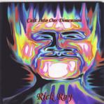

| Artist: | Rick Ray |
| Title: | Cast Into Our Dimension |
| Label: | Neurosis Records |
| Length(s): | 72 minutes |
| Year(s) of release: | 1999 |
| Month of review: | 08/2000 |
| 1) | Always In Your View | 6.56 |
| 2) | Utopian Order | 1.12 |
| 3) | Guitarm And Hammer | 3.27 |
| 4) | Embracing Insanity | 6.41 |
| 5) | Another Dimension | 4.29 |
| 6) | Time Seems To Fly | 8.33 |
| 7) | Freedom No Longer | 1.54 |
| 8) | Cast Into Our Dimension | 4.06 |
| 9) | The Monolith | 4.37 |
| 10) | In This Sphere | 4.58 |
| 11) | Deadman's Boogie | 3.30 |
| 12) | Bloppy Stuff (part 5) | 4.05 |
| 13) | A Wheel Within A Wheel | 4.46 |
| 14) | The Voices Of Tartarus | 1.41 |
| 15) | The Writer | 5.13 |
| 16) | Corruption Had Taken Over | 6.10 |